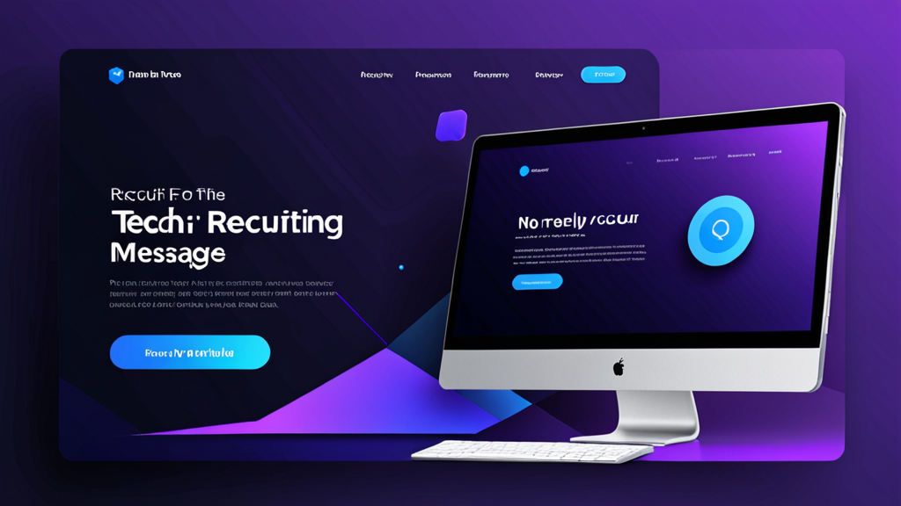

招聘消息最佳AI回复工具：招聘人员更智能外联指南
如果你曾花超过十分钟为一位被动求职者撰写个性化LinkedIn消息，你就知道这有多痛苦。既要听起来像真人对话，又要提及对方的具体经历，还要包含合适的行动号召——同时避免不小心粘贴错公司名称。
招聘消息最佳AI回复工具正是为了解决这个问题。它们能帮你起草个性化而非模板化的沟通内容。但并非所有工具都同样有效，了解如何高效使用它们，是听起来像机器人还是像一位真正做过功课的招聘人员之间的区别。
本指南涵盖AI招聘助手应具备的特质、如何在使用时不失个人风格，以及提高回复率的实用技巧。
为什么招聘人员需要更好的消息撰写方式
招聘人员每周要发送数十条——有时数百条——消息。每条消息都需要切换情境：查看候选人资料、核对职位描述、撰写能在拥挤收件箱中脱颖而出的内容。
结果如何？许多招聘人员退而求其次使用通用模板。候选人一眼就能识破。根据LinkedIn数据，InMail的平均回复率约为20-25%——当消息显得批量生产时，这个数字会大幅下降。
一个招聘消息生成器不仅节省时间，还能帮助你在大量沟通中保持质量。当你能生成包含候选人职位、行业以及其资料中相关细节的草稿时，你更有可能获得回复。
招聘消息最佳AI回复工具应具备什么特质？
并非所有AI写作工具都为招聘而设计。在选择之前，请注意以下几点：
1. 情境感知能力
工具应理解你是谁、候选人是谁以及你正在招聘什么职位。不考虑情境的通用AI聊天机器人只会生成模糊、无法使用的草稿。
2. 语气控制
你需要能够调整语气——从专业正式到随意直接。一个只能使用单一风格的候选人外联工具无法适用于不同职位和行业。
3. 平台集成
最佳工具能在你已有的平台上运行：LinkedIn Recruiter、Greenhouse、Lever、Workday。如果需要在标签页之间复制粘贴，就失去了自动化的意义。
4. 隐私与控制
你绝不应担心API密钥泄露或消息被自动发送。招聘消息最佳AI回复工具让你完全控制发送内容，并将数据保留在本地。
如何在使用AI招聘助手时不显得像AI
即使是最好的工具，如果你不加以引导，也可能产出生硬的内容。以下方法可保持人性化触感：
从强有力的提示开始
不要只点击"生成"。向工具提供具体细节：
- 候选人的当前职位和公司
- 其资料中的具体项目或成就
- 为什么这个职位与其职业道路相关
示例提示：
"写一条简短的LinkedIn消息给Spotify的高级产品经理。提及他们在功能个性化方面的工作。职位是一家B轮金融科技初创公司的产品主管。语气：友好但专业。"
编辑输出内容
发送前务必阅读草稿。删除任何不自然的短语。添加只有你能注意到的个人问题或观察。AI是起点——你的声音完成消息。
为不同阶段使用不同模板
冷启动外联消息不应听起来像拒绝信。一个AI招聘助手应让你在以下阶段之间切换：
- 首次外联
- 跟进（无回复时）
- 面试邀请
- 拒绝或更新
每个阶段需要不同的语气和详细程度。
实际案例：AI辅助前后对比
让我们看看AI工具如何在实际场景中改善消息。
冷启动外联
之前（通用模板）：
"嗨[姓名]，我看到你的资料，觉得你很适合我们公司的职位。如有兴趣请告知。"
之后（使用AI招聘助手）：
"嗨Sarah，你在HubSpot负责用户留存的工作引起了我的注意——尤其是那个将流失率降低12%的活动。我们正在一家A轮公司组建类似的增长团队，需要你的专业经验。本周方便简短聊一下吗？"
第二条消息提及具体工作、展示研究背景并提出明确问题。这就是被删除和获得回复之间的区别。
跟进消息
之前：
"跟进一下我之前的消息。如有兴趣请告知。"
之后：
"嗨Sarah——我知道你很忙，所以长话短说。如果时机不合适，完全没关系。但如果你对这个职位感兴趣，我很乐意分享更多细节。无论如何，感谢你的考虑。"
这条跟进消息承认了候选人的时间并消除了压力，这通常能带来回复。
提高候选人回复率的技巧
使用招聘消息最佳AI回复工具只是成功的一半。以下策略可进一步改善你的外联效果：
超越资料进行个性化
提及他们最近的帖子、共同联系人或者参加过的会议。AI并不总能捕捉这些细节——请手动添加。
保持简短
候选人在手机上阅读消息。尽量控制在3-5句话以内。如果AI草稿较长，请精简。
包含低门槛请求
与其说"我们能安排通话吗？"，不如试试"如果你好奇，我很乐意分享职位描述。"更低的承诺度=更高的回复率。
使用清晰的主题行（针对邮件）
如果你使用Greenhouse或Lever等ATS系统，你的消息可能出现在候选人收件箱中。使用类似"关于你在[公司]经验的小问题"的主题行——而不是"工作机会"。
为什么招聘自动化仍需保持人性化
有些招聘人员担心使用AI会降低真实感。事实恰恰相反。当你自动化了写作中重复的部分，就能释放脑力去处理真正重要的事情：阅读候选人资料、思考其匹配度、建立信任关系。
招聘自动化工具应处理打字工作，而非思考工作。最好的工具尊重这一界限。
为你的工作流程选择合适工具
如果你正在评估选项，请考虑工具如何融入你的日常工作。你大部分时间在LinkedIn Recruiter中度过？还是主要在Workday或Lever等ATS系统中工作？招聘消息最佳AI回复工具能无缝集成到现有工作流程中，而不是一个需要特意打开的独立应用。
同时考虑安全性。如果你的组织处理敏感的候选人数据，你需要一个能本地处理信息且不将消息存储在外部服务器上的工具。隐私优先的设计比花哨的功能更重要。
一个符合这些条件的工具是RecruitReply AI——它在LinkedIn Recruiter和主要ATS平台内运行，使用设备端AI，且从不自动发送消息。但无论你选择哪个工具，本指南中的原则都适用。
最后思考
招聘消息最佳AI回复工具不是为了取代招聘人员。它们是为了消除摩擦。当你能在几秒钟内生成个性化、听起来像真人的草稿时，你就能更一致地发送更好的消息，同时付出更少的努力。
这将带来更高的回复率、更好的候选人关系，以及更多时间用于招聘中真正重要的战略部分。
如果你准备好尝试一款尊重你的工作流程和候选人隐私的工具，请查看RecruitReply AI。它专为那些希望写更好消息——更快——同时不失去个人风格的招聘人员而设计。